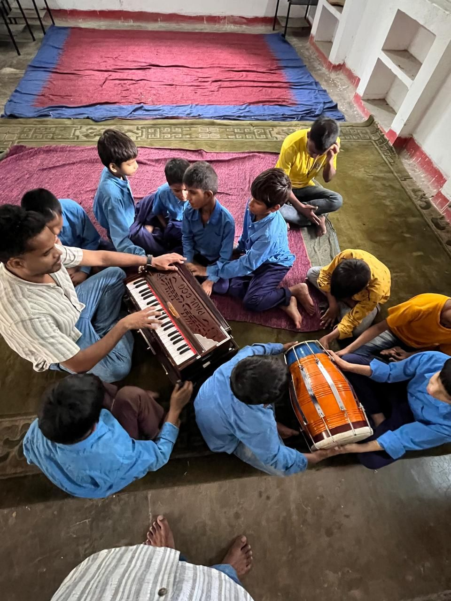

Connecting with our roots
The repertoire was local on purpose
Part of the point was to tie the learning to where the students actually come from. The sounds in the room were the sounds of their own communities, and the material carried India's oral and musical heritage with it: Bhojpuri, Maithili, Magahi and related traditions; traditional and folk instruments; festival and community songs; oral storytelling; Indian classical music; and folk material given contemporary interpretation.